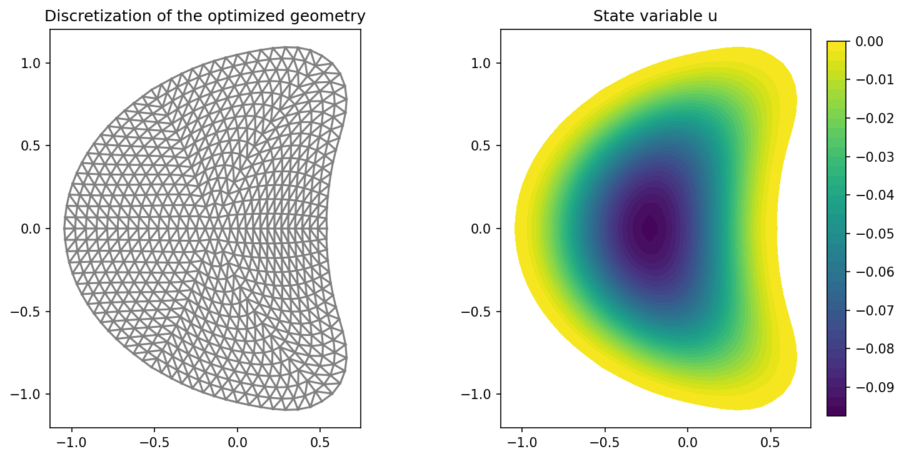

cashocs as Solver for Shape Optimization Problems#
Problem Formulation#
Let us now investigate how cashocs can be used exclusively as a solver for shape optimization problems. The procedure is very similar to the one discussed in cashocs as Solver for Optimal Control Problems, but with some minor variations tailored to shape optimization.
As a model shape optimization problem we consider the same as in Shape Optimization with a Poisson Problem, i.e.,
For the initial domain, we use the unit disc \(\Omega = \{ x \in \mathbb{R}^2 \,\mid\, \lvert\lvert x \rvert\rvert_2 < 1 \}\) and the right-hand side \(f\) is given by
Implementation#
The complete python code can be found in the file demo_shape_solver.py
and the corresponding config can be found in config.ini.
Recapitulation of Shape Optimization with a Poisson Problem#
Analogously to cashocs as Solver for Optimal Control Problems, the code we use in case cashocs is treated as a solver only is identical to the one of Shape Optimization with a Poisson Problem up to the definition of the optimization problem. For the sake of completeness we recall the corresponding code in the following
from fenics import *
import cashocs
config = cashocs.load_config("./config.ini")
mesh, subdomains, boundaries, dx, ds, dS = cashocs.import_mesh("./mesh/mesh.xdmf")
V = FunctionSpace(mesh, "CG", 1)
u = Function(V)
p = Function(V)
x = SpatialCoordinate(mesh)
f = 2.5 * pow(x[0] + 0.4 - pow(x[1], 2), 2) + pow(x[0], 2) + pow(x[1], 2) - 1
e = inner(grad(u), grad(p)) * dx - f * p * dx
bcs = DirichletBC(V, Constant(0), boundaries, 1)
J = cashocs.IntegralFunctional(u * dx)
sop = cashocs.ShapeOptimizationProblem(e, bcs, J, u, p, boundaries, config=config)
Supplying Custom Adjoint Systems and Shape Derivatives#
Now, our goal is to use custom UFL forms for the adjoint system and shape derivative. Note, that the adjoint system for the considered optimization problem is given by
and the corresponding shape derivative is given by
where \(\varepsilon(\mathcal{V})\) is the symmetric part of the gradient of \(\mathcal{V}\), given by \(\varepsilon(\mathcal{V}) = \frac{1}{2} \left( D\mathcal{V} + D\mathcal{V}^\top \right)\). For details, we refer the reader to, e.g., Delfour and Zolesio - Shapes and Geometries.
To supply these weak forms to cashocs, we can use the following code. For the shape derivative, we write
def eps(u):
return Constant(0.5) * (grad(u) + grad(u).T)
vector_field = sop.get_vector_field()
dJ = (
div(vector_field) * u * dx
- inner(
(div(vector_field) * Identity(2) - 2 * eps(vector_field)) * grad(u),
grad(p),
)
* dx
+ div(f * vector_field) * p * dx
)
Note, that we have to call the
get_vector_field method
which returns the UFL object corresponding to \(\mathcal{V}\) and which is to be used
at its place.
Hint
Alternatively, one could define the variable vector_field as follows
space = VectorFunctionSpace(mesh, 'CG', 1)
vector_field = TestFunction(space)
which would yield identical results. However, the shorthand via the
get_vector_field
is more convenient, as one does not have to remember to define the correct function
space first.
For the adjoint system, the procedure is exactly the same as in cashocs as Solver for Optimal Control Problems and we have the following code
adjoint_form = inner(grad(p), grad(TestFunction(V))) * dx - TestFunction(V) * dx
adjoint_bcs = bcs
Again, the format is analogous to the format of the state system, but now we have to
specify a fenics.TestFunction object for the adjoint equation.
Finally, the weak forms are supplied to cashocs with the line
sop.supply_custom_forms(dJ, adjoint_form, adjoint_bcs)
and the optimization problem is solved with
sop.solve()
Note
One can also specify either the adjoint system or the shape derivative of the cost
functional, using the methods supply_adjoint_forms or
supply_derivatives.
However, this is potentially dangerous, due to the following. The adjoint system
is a linear system, and there is no fixed convention for the sign of the adjoint
state. Hence, supplying, e.g., only the adjoint system, might not be compatible with
the derivative of the cost functional which cashocs computes. In effect, the sign
is specified by the choice of adding or subtracting the PDE constraint from the
cost functional for the definition of a Lagrangian function, which is used to
determine the adjoint system and derivative. cashocs internally uses the convention
that the PDE constraint is added, so that, internally, it computes not the adjoint
state \(p\) as defined by the equations given above, but \(-p\) instead.
Hence, it is recommended to either specify all respective quantities with the
supply_custom_forms
method.
We visualize the results with the code
import matplotlib.pyplot as plt
plt.figure(figsize=(10, 5))
ax_mesh = plt.subplot(1, 2, 1)
fig_mesh = plot(mesh)
plt.title("Discretization of the optimized geometry")
ax_u = plt.subplot(1, 2, 2)
ax_u.set_xlim(ax_mesh.get_xlim())
ax_u.set_ylim(ax_mesh.get_ylim())
fig_u = plot(u)
plt.colorbar(fig_u, fraction=0.046, pad=0.04)
plt.title("State variable u")
plt.tight_layout()
# plt.savefig('./img_shape_solver.png', dpi=150, bbox_inches='tight')
The result is, of course, completely identical to the one of Shape Optimization with a Poisson Problem and looks as follows 
Note
In case multiple state equations are used, the corresponding adjoint systems also have to be specified as ordered lists, just as explained for optimal control problems in Using Multiple Variables and PDEs.